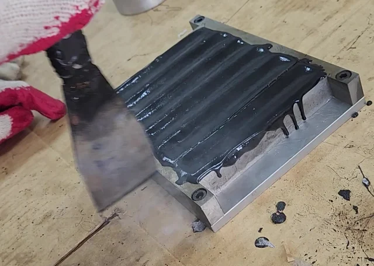
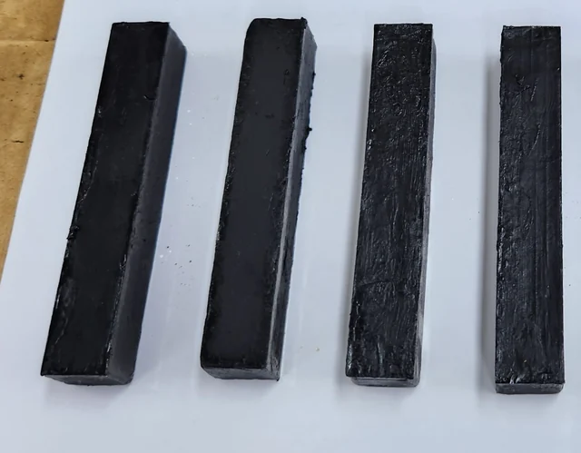
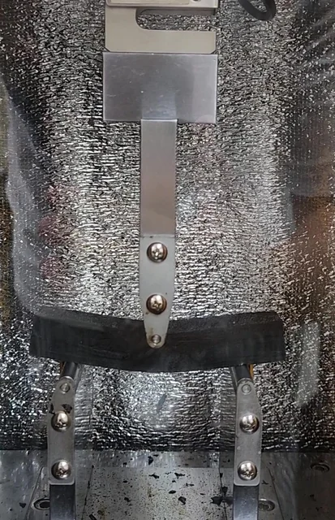
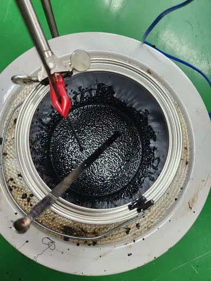
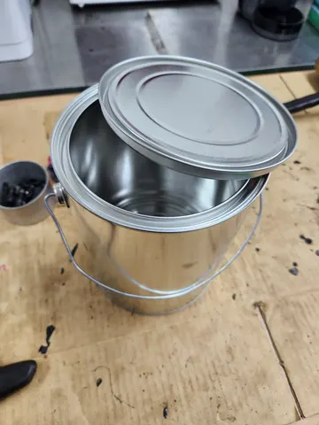
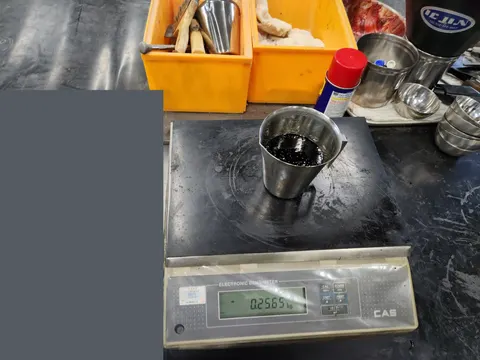

Fig. 8 · 하중–시간 곡선
A 바인더의 시간별 측정 하중과 적합 곡선을 비교합니다. 세로축은 하중(N)의 로그 눈금입니다.
2023–2024 · 시편 제작 · 시험·분석 지원
−20°C는 고점도 아스팔트 바인더를 평가하기에 적절한 시험조건인가?
고점도 아스팔트 바인더의 저온 휨 거동과 −20°C 시험조건의 적정성을 검토한 연구입니다. 시험조건에 대한 판단을 실험 관찰 및 통계적 검토와 연결했습니다.

같은 영상의 20.00초 장면. 중앙 재하부 아래에서 시편의 휨이 크게 나타난다.
일본에서 시작되어 한국아스팔트학회가 개량한 시험법으로, 보 시편의 중앙 재하부와 양쪽 지지점이 시험 구성을 이룹니다. 시편 제작·시험 지원과 실험기록 대조를 통해 측정에서 분석·보고까지의 연결을 유지하는 데 기여했습니다.
시편은 직접 제작했으며, 저온 3점 휨시험과 통계분석·논문 작성을 지원했습니다. 사진은 실제 작업 과정을 보여주며, 개별 사진 속 시편과 논문 데이터의 일대일 대응은 확인되지 않았습니다.

보 시편 제작 과정에서 바인더를 채운 몰드.

충전된 몰드의 상면을 도구로 정리하는 시편 준비 영상의 한 장면.

탈형 후 정리한 아스팔트 바인더 보 시편.

같은 영상의 앞 장면(8.00초). 두 지지점 사이 시편에 중앙 재하부가 접촉해 있다.
8.00초와 20.00초는 영상 내 위치이며 계측 데이터의 시험시간을 뜻하지 않습니다.
A 바인더의 시간별 측정 하중과 적합 곡선을 비교합니다. 세로축은 하중(N)의 로그 눈금입니다.
모델링 값을 온도 쌍별로 비교한 시간별 p값입니다. 0.05 기준선 아래는 해당 시점의 차이에 통계적 근거가 있음을 나타냅니다.
시편 제작, 시험·통계분석 지원과 연구기록을 연결한 경험입니다. 연구내용은 2023년 논문으로 게재되었으며, 제2저자·교신저자로 참여했습니다.
관련 논문 · DOI ↗
가열 용기 속 바인더와 혼합 도구. 개질바인더 제조 맥락은 사용자 설명에 근거하며 개질제 종류는 특정하지 않습니다.

소량의 검은 재료가 담긴 컵 옆의 금속 용기와 뚜껑. 용기 준비 장면이며 화학 성분은 사진으로 특정하지 않습니다.

재료 계량 과정에서 저울 위에 놓은 바인더 컵. 함께 놓인 내부 준비표를 가렸으며 바인더 함량이나 화학 성분은 사진으로 확정하지 않습니다.